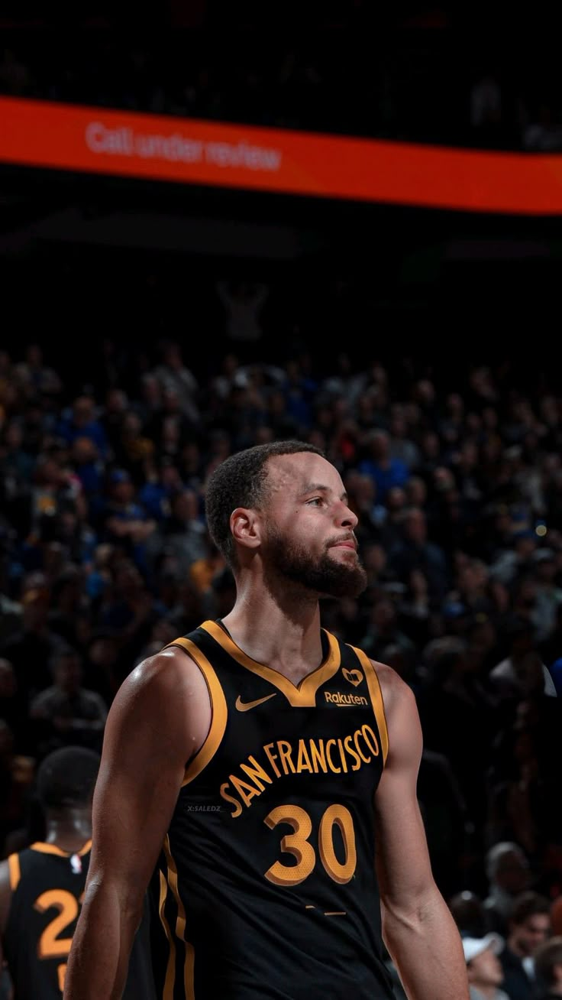

Stephen Curry

¿Quién es?
Wardell Stephen Curry II (Akron, Ohio, 14 de marzo de 1988) es un jugador de baloncesto estadounidense que pertenece a la plantilla de los Golden State Warriors de la NBA. Con 1,88 metros de altura, juega en la posición de base.[4
Hijo del exjugador de la NBA Dell Curry[5] y hermano mayor del también jugador Seth Curry,[6] jugó a nivel universitario tres años en Davidson y fue elegido por los Warriors en la séptima posición del Draft de la NBA de 2009. A lo largo de su carrera ha sido cuatro veces campeón de la NBA, dos veces MVP de la temporada regular y una vez MVP de las Finales, además de conseguir dos Copas del Mundo y un oro olímpico con la selección estadounidense. Es considerado como el mejor tirador de la historia del baloncesto y es el líder histórico de la NBA en triples anotados.[7][8
Biografía
Nació el 14 de marzo de 1988 en el Hospital Summa de la ciudad de Akron, Ohio, en la misma planta en la que nació LeBron James 39 meses antes, mientras su padre pertenecía en aquel momento a la plantilla de los Cleveland Cavaliers.[9][10] Creció en Charlotte, Carolina del Norte, donde su padre pasó la mayor parte de su carrera jugando con los Charlotte Hornets.[11] Dell a menudo llevaba a Curry y a su hermano menor Seth a sus partidos, donde tiraban a canasta con los Hornets durante los calentamientos.[12] La familia se mudó brevemente a Toronto, donde Dell terminó su carrera como miembro de los Toronto Raptors.[11
Después de la retirada de Dell, la familia se mudó de regreso a Charlotte, y Curry fue inscrito en el Charlotte Christian School, donde fue incluido en el mejor quinteto de la conferencia y del estado, y llevó a su equipo a tres títulos de conferencia y tres apariciones en playoffs estatales. Debido a la carrera histórica de su padre en Virginia Tech, Curry quería jugar baloncesto universitario para los Hokies, pero solo se le ofreció una plaza sin posibilidad de beca debido, en parte, a su complexión de tan solo 72 kilos. Finalmente, eligió asistir al Davidson College, que lo venía siguiendo desde décimo grado.[13
Trayectoria Deportiva
Inicios
Jugó durante tres temporadas para los Wildcats del Davidson College, en las que promedió 25,3 puntos, 4,5 rebotes y 3,7 asistencias por partido.[14] No tardó en demostrar sus cualidades, ya que en su segundo partido oficial, ante Michigan Wolverines consiguió 32 puntos, 9 rebotes y 4 asistencias.[15] Acabó la temporada liderando a la Southern Conference en anotación, con 21,5 puntos por partido,[5] siendo el segundo mejor anotador novato de todo el país tras el jugador de Texas, Kevin Durant, que acabaría siendo elegido en la segunda posición del draft del 2007.
En su segunda temporada volvió a liderar en anotación en su conferencia, al promediar 25,9 puntos por partido, a lo que añadió 4,6 rebotes, 2,9 asistencias y 2,0 robos de balón.[5] Acabó siendo elegido en el segundo quinteto del All-American,[16] además de ser finalista al John R. Wooden Award. También batió el récord de más triples anotados por un jugador de la NCAA en una temporada, con 162.[5
Premios
x4 veces Campeón de la NBA (2015, 2017, 2018, 2022).
x1 medalla de Oro Olímpica (París 2024).
x2 medallas de Oro en Copas del Mundo FIBA (2010, 2014).